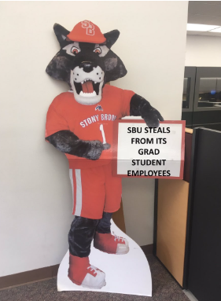
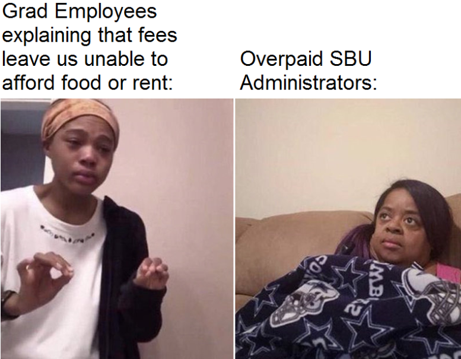

What Can I Do?
Angry yet? Want to do something to stop Stony Brook's egregious wage theft in the form of fees? Here are a few things you can do:
Send emails to administrators
Check out our pages for each administrator. They contain contact information that you can use to give Stony Brook's wage thieves a piece of your mind!
Post on Stony Brook social media
Image is everything to universities, including Stony Brook. Post angry messages and memes on Stony Brook's social media and leave nasty reviews on Google and Yelp so they will be seen by prospective students (i.e. prospective money sources for Stony Brook University). Let prospective students know that their TAs are overworked and underpaid by the university.
Post memes (provided below) and leave nasty reviews at these sites:
 Sign petitions
You can sign the Letter of Support for ending Stony Brook University's mandatory fees for graduate employees here. We'll keep this site updated with any future petitions for you to sign!
Tell your story
How have Stony Brook's unfair graduate student fees affected you? Let us know using the form on this page, and we'll post your story right here on our site! We can even post it anonymously if you would like.
Share this website
Now that you know the truth about Stony Brook University unethically generating on the backs of some of its most vulnerable, underpaid workers, let others know by sharing this site! Make a Facebook post linking to us, or tweet out the link! Spread this valuable information about Stony Brook University far and wide!